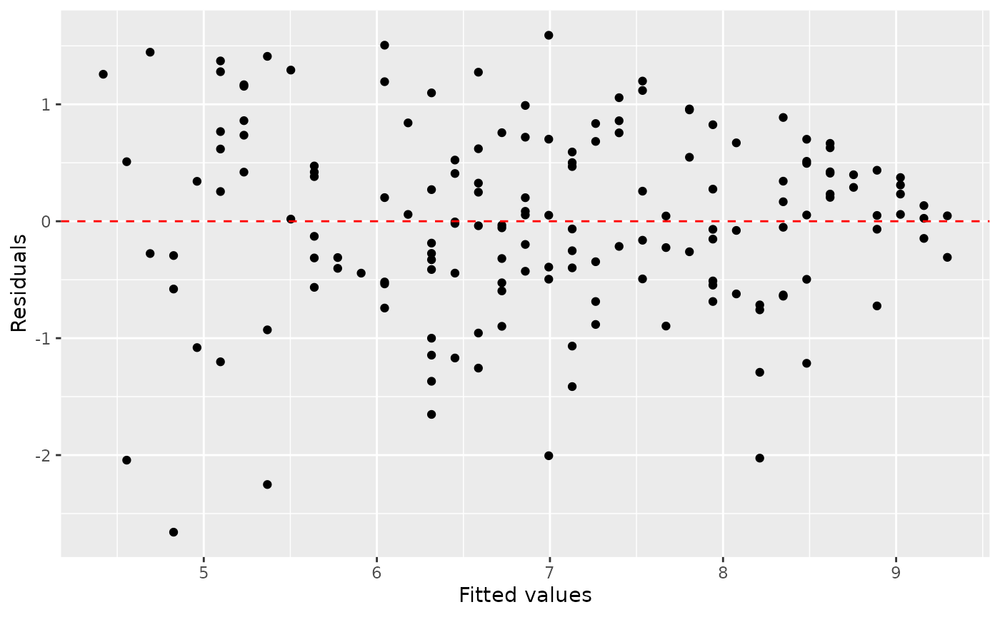
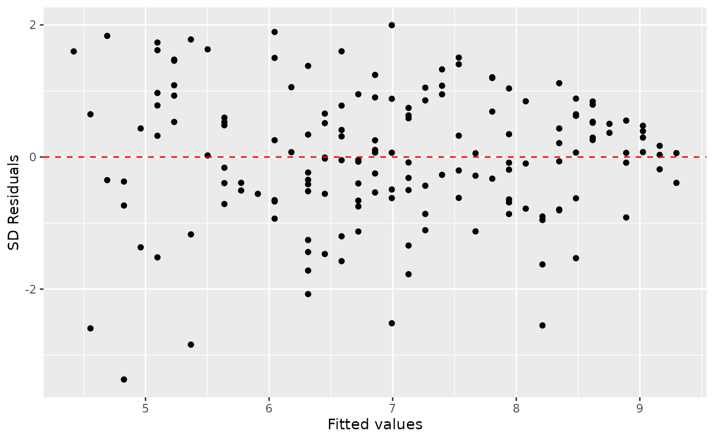

STATISTICAL TESTS
Statistical tests are used to test assertions about populations. The aim is to determine whether there is enough evidence to reject a null hypothesis. This is shown by way of p-values.
How it works for continuous data?
For normal continuous data with one or two groups of interest, the t-test (paired or unpaired) is used to compare means. For non-normal data, non-parametric tests such as the Wilcoxon Test is used that compares ranks. For three or more groups, the ANOVA method (for normal data) compares the means with the help of variance calculations between groups and within groups. and Kruskal-Wallis test (for non-normal data) to compare ranks for non-normal data for calculations between groups and within groups.
library(tidyverse)
#> ── Attaching packages ─────────────────────────────────────── tidyverse 1.3.1 ──
#> ✔ ggplot2 3.3.5 ✔ purrr 0.3.4
#> ✔ tibble 3.1.6 ✔ dplyr 1.0.8
#> ✔ tidyr 1.2.0 ✔ stringr 1.4.0
#> ✔ readr 2.1.2 ✔ forcats 0.5.1
#> ── Conflicts ────────────────────────────────────────── tidyverse_conflicts() ──
#> ✖ dplyr::filter() masks stats::filter()
#> ✖ dplyr::lag() masks stats::lag()
library(openintro)
#> Loading required package: airports
#> Loading required package: cherryblossom
#> Loading required package: usdata
hip<-read.csv("../inst/extdata/hip_data.csv")
summary(hip)
#> id sex age retired
#> Min. : 1.0 Length:708 Min. :31.00 Min. :0.0000
#> 1st Qu.:177.8 Class :character 1st Qu.:66.00 1st Qu.:0.0000
#> Median :354.5 Mode :character Median :75.00 Median :1.0000
#> Mean :354.5 Mean :73.52 Mean :0.5709
#> 3rd Qu.:531.2 3rd Qu.:82.00 3rd Qu.:1.0000
#> Max. :708.0 Max. :99.00 Max. :1.0000
#> NA's :454
#> ohs0 ohs6 ohsdiff EQ5D0
#> Min. : 0.00 Min. : 6.00 Min. :-43.0 Min. :-0.5940
#> 1st Qu.:13.00 1st Qu.:33.00 1st Qu.:-26.0 1st Qu.: 0.0550
#> Median :20.00 Median :42.00 Median :-19.0 Median : 0.5160
#> Mean :20.03 Mean :38.63 Mean :-18.6 Mean : 0.3804
#> 3rd Qu.:26.00 3rd Qu.:46.00 3rd Qu.:-12.0 3rd Qu.: 0.6910
#> Max. :46.00 Max. :48.00 Max. : 19.0 Max. : 1.0000
#> NA's :18
#> height weight satisfaction bmi
#> Min. :1.080 Min. : 44.0 Min. : 0.00 Min. : 0.0022
#> 1st Qu.:1.603 1st Qu.: 65.0 1st Qu.: 90.00 1st Qu.:23.4509
#> Median :1.660 Median : 74.0 Median :100.00 Median :26.3465
#> Mean :1.667 Mean : 76.1 Mean : 89.22 Mean :26.4614
#> 3rd Qu.:1.740 3rd Qu.: 86.0 3rd Qu.:100.00 3rd Qu.:30.3692
#> Max. :1.970 Max. :186.0 Max. :100.00 Max. :63.4431
#> NA's :370 NA's :359 NA's :52 NA's :359
#> bmi_imputed ethnic side imdscore
#> Min. : 0.00225 Min. :0.0000 Length:708 Min. : 0.92
#> 1st Qu.:23.26808 1st Qu.:0.0000 Class :character 1st Qu.: 7.07
#> Median :26.68621 Median :0.0000 Mode :character Median :11.07
#> Mean :26.74399 Mean :0.1501 Mean :13.82
#> 3rd Qu.:30.82529 3rd Qu.:0.0000 3rd Qu.:18.86
#> Max. :63.44307 Max. :1.0000 Max. :48.05
#> NA's :355 NA's :11For categorical data, the chi-squared test shows if the observed values in each sub-category differ to the expected values by chance or not.
Two-sample T-test or Wilcoxon-rank tests
T-tests or Wilcoxon-rank tests can be used to describe the association between two continuous variables.
Unpaired tests
Explore the distributions of ages in men and women
hip %>% filter(!is.na(sex)) %>% ggplot(aes(sex,height)) + geom_boxplot()
#> Warning: Removed 369 rows containing non-finite values (stat_boxplot).
hip %>%
select(height, weight, sex) %>%
filter(!is.na(sex)) %>%
pivot_longer(cols = c(height, weight)) %>%
ggplot()+geom_boxplot(aes(sex, log10(value), fill=name))
#> Warning: Removed 727 rows containing non-finite values (stat_boxplot).
An unpaired t-test looks at whether the means of continuous variables differs between two groups. For example we could see whether there is an association between the average age of men and the average age of women. You can get the means with estimate and the p-value with p.value using the accessor $.
library(broom)
t<-t.test(age~sex,data=hip %>% filter(!is.na(sex)))
t
#>
#> Welch Two Sample t-test
#>
#> data: age by sex
#> t = 4.5196, df = 578.32, p-value = 7.517e-06
#> alternative hypothesis: true difference in means between group Female and group Male is not equal to 0
#> 95 percent confidence interval:
#> 2.228963 5.655140
#> sample estimates:
#> mean in group Female mean in group Male
#> 75.05275 71.11070
tidy(t)
#> # A tibble: 1 × 10
#> estimate estimate1 estimate2 statistic p.value parameter conf.low conf.high
#> <dbl> <dbl> <dbl> <dbl> <dbl> <dbl> <dbl> <dbl>
#> 1 3.94 75.1 71.1 4.52 0.00000752 578. 2.23 5.66
#> # … with 2 more variables: method <chr>, alternative <chr>
t$estimate
#> mean in group Female mean in group Male
#> 75.05275 71.11070
t$p.value
#> [1] 7.516598e-06This indicates that there is a difference in the mean age of men and women of -3.9420512, and this difference is significant with a p.value of 7.5210^{-6}
The p-value from the t-test can be added to the boxplots using stat_compare_means from the library ggpubr.
library(ggpubr)
hip %>% filter(!is.na(sex)) %>% ggplot(aes(sex,age)) + geom_boxplot() + stat_compare_means(method = "t.test")However, check the distribution of age in men and women separately using the histogram and qq-plot. It does not look normally distributed.
hip %>% filter(!is.na(sex)) %>% ggplot(aes(age, fill=sex)) + facet_grid(~sex) + geom_histogram()
#> `stat_bin()` using `bins = 30`. Pick better value with `binwidth`.
hip %>% filter(!is.na(sex)) %>% ggplot(aes(sample=scale(age), fill=sex)) + facet_grid(~sex) + geom_qq() + geom_abline() 
Instead of the t-test, one should use the Wilcoxon rank-sum test.
w<-wilcox.test(age~sex,data=hip %>% filter(!is.na(sex)))
w
#>
#> Wilcoxon rank sum test with continuity correction
#>
#> data: age by sex
#> W = 71138, p-value = 4.889e-06
#> alternative hypothesis: true location shift is not equal to 0
est<-hip %>% filter(!is.na(sex)) %>% group_by(sex) %>% summarize(median=median(age,na.rm=TRUE))
est
#> # A tibble: 2 × 2
#> sex median
#> <chr> <dbl>
#> 1 Female 77
#> 2 Male 73This indicates that there is a difference in the median age of men and women of -4, and this difference is significant with a p.value of 4.8910^{-6}
Similarly, add the p-value to the boxplots using stat_compare_means from the library ggpubr. The Wilcox-test is the default method, so we do not need to add an argument to the funciton.
hip %>% filter(!is.na(sex)) %>% ggplot(aes(sex,age)) + geom_boxplot() + stat_compare_means()Paired tests
The paired t-test would be used to compare the difference in repeated measures on the same individuals. For example, in the dataset, Performance at baseline and 6-months are given by ohs0 and ohs6. Use a paired t-test to analyse the difference in the distributions. Note the extra paired argument in the t.test function. Use the using the accessor $ or pull to extract the relevant variables.
t<-t.test(hip$ohs0,hip$ohs6, paired=TRUE)
t
#>
#> Paired t-test
#>
#> data: hip$ohs0 and hip$ohs6
#> t = -45.865, df = 707, p-value < 2.2e-16
#> alternative hypothesis: true difference in means is not equal to 0
#> 95 percent confidence interval:
#> -19.40091 -17.80813
#> sample estimates:
#> mean of the differences
#> -18.60452
t$estimate
#> mean of the differences
#> -18.60452
t$p.value
#> [1] 4.551803e-214This indicates that there is a difference in the mean performance between baseline and 6 months of -18.6045198, and this difference is highly significant.
Calculate the difference between the performances at the 2 time points and use a histogram to represent the distribution. Use geom_vline to draw a dotted line at 0 to represent the Null distribution.
hip %>% mutate(diff=ohs6-ohs0) %>% ggplot(aes(diff)) + geom_histogram() + geom_vline(xintercept = 0, lty=2)
#> `stat_bin()` using `bins = 30`. Pick better value with `binwidth`.The non-parametric version is the Wilcoxon signed-rank test, and this is also significant.
w<-wilcox.test(hip$ohs0,hip$ohs6,paired=TRUE)
w
#>
#> Wilcoxon signed rank test with continuity correction
#>
#> data: hip$ohs0 and hip$ohs6
#> V = 2850, p-value < 2.2e-16
#> alternative hypothesis: true location shift is not equal to 0
w$p.value
#> [1] 2.184776e-111ANOVA (Analysis of Variance)
A one-way ANOVA can be used when there are more than two groups.
For example split the variable of satisfaction into 3 groups.
hip<-hip %>% mutate(satisfaction.cat=factor(ifelse(satisfaction<80,"Low",ifelse(between(satisfaction,80,90),"Medium","High")), levels=c("Low","Medium","High")))
hip %>% pull(satisfaction.cat) %>% table()
#> .
#> Low Medium High
#> 87 185 384Run an ANOVA to test the relationship between age and satisfaction.cat
a<-aov(age~satisfaction.cat,data=hip)
s<-summary(a)
s
#> Df Sum Sq Mean Sq F value Pr(>F)
#> satisfaction.cat 2 396 198.2 1.482 0.228
#> Residuals 653 87324 133.7
#> 52 observations deleted due to missingnessThis suggests that there is very little evidence that satisfaction groups are different with respect to age. with a p-value of 0.228
Chi-squared test
To look at the association between two categorical variables we can perform a chi squared test Study the relationshipo between sex and satisfaction.cat using a contingency table and a bar plot.
hip %>% filter(!is.na(satisfaction.cat)) %>% filter(!is.na(sex)) %>% ggplot(aes(sex,fill=satisfaction.cat)) + geom_bar(position="dodge")
t <- hip %>% select(sex,satisfaction.cat) %>% table()
t
#> satisfaction.cat
#> sex Low Medium High
#> Female 55 116 233
#> Male 32 69 150Use prop.table and geom_bar(stat="identity") to report the relative frequencies of satisfaction between the sexes.
p<-prop.table(t, margin =1)
p %>% as.data.frame() %>% ggplot(aes(x=sex,y=Freq,fill=satisfaction.cat)) + geom_bar(stat="identity")You can get relative risk between the sexes of being satisfied at a specific level from the following command.
p[1,]/p[2,]
#> Low Medium High
#> 1.067837 1.044483 0.965066Test this relationship using the chi.test command on the contingency table.
c<-chisq.test(t)
c
#>
#> Pearson's Chi-squared test
#>
#> data: t
#> X-squared = 0.28454, df = 2, p-value = 0.8674The relative risks are close to 1. Alongwith the test, this indicates that there is very little evidence of a relationship between satisfaction.cat and sex, with a p.value of 0.8674.
Exercise
Check whether there is a difference in the performance at baseline
ohs0between the males and females. Study the distributions and decide which test to use.We used an ANOVA to study the distribution of satisfaction.cat and age. Check the distribution of age over the 3 satisfaction.cat groups. Does it pass normality assumptions? If you are unsure, use Kruskal-Wallis test. Hint you can get information using
?kruskal.test.Use ANOVA or Kruskal-Wallis test to check if there is an association between baseline ohs0 and satisfaction.cat groups.
Create a table of retired against satisfaction groups. Does the chi-square test show an association between the two?
Linear associations
hip %>%
ggplot()+geom_point(aes(age, weight))
#> Warning: Removed 359 rows containing missing values (geom_point).
Linear regression
m1 <- lm(weight ~ age, data = hip)The first argument in the function lm() is a formula that takes the form y ~ x.
The output of lm() is an object that contains all of the information we need about the linear model that was just fit. We can access this information using the tidy() function.
tidy(m1)
#> # A tibble: 2 × 5
#> term estimate std.error statistic p.value
#> <chr> <dbl> <dbl> <dbl> <dbl>
#> 1 (Intercept) 106. 5.69 18.7 1.78e-54
#> 2 age -0.410 0.0762 -5.38 1.36e- 7
summary(m1)
#>
#> Call:
#> lm(formula = weight ~ age, data = hip)
#>
#> Residuals:
#> Min 1Q Median 3Q Max
#> -35.285 -11.775 -0.955 9.035 107.125
#>
#> Coefficients:
#> Estimate Std. Error t value Pr(>|t|)
#> (Intercept) 106.34195 5.68613 18.702 < 2e-16 ***
#> age -0.40996 0.07617 -5.382 1.36e-07 ***
#> ---
#> Signif. codes: 0 '***' 0.001 '**' 0.01 '*' 0.05 '.' 0.1 ' ' 1
#>
#> Residual standard error: 16.2 on 347 degrees of freedom
#> (359 observations deleted due to missingness)
#> Multiple R-squared: 0.07705, Adjusted R-squared: 0.07439
#> F-statistic: 28.97 on 1 and 347 DF, p-value: 1.358e-07
glance(m1)
#> # A tibble: 1 × 12
#> r.squared adj.r.squared sigma statistic p.value df logLik AIC BIC
#> <dbl> <dbl> <dbl> <dbl> <dbl> <dbl> <dbl> <dbl> <dbl>
#> 1 0.0770 0.0744 16.2 29.0 0.000000136 1 -1466. 2938. 2950.
#> # … with 3 more variables: deviance <dbl>, df.residual <int>, nobs <int>For this model, 7.7% of the variability in weight is explained by age.
Correlation is not causation!!!

Prediction and prediction errors
Let’s create a scatterplot with the least squares line for m1 laid on top.
ggplot(data = hip, aes(x = age, y = weight, color=sex)) +
geom_point() +
geom_smooth(method = "lm", se = FALSE)
#> `geom_smooth()` using formula 'y ~ x'
#> Warning: Removed 359 rows containing non-finite values (stat_smooth).
#> Warning: Removed 359 rows containing missing values (geom_point).
Here, we are literally adding a layer on top of our plot. geom_smooth creates the line by fitting a linear model. It can also show us the standard error se associated with our line, but we’ll suppress that for now.
This line can be used to predict \(y\) at any value of \(x\). When predictions are made for values of \(x\) that are beyond the range of the observed data, it is referred to as extrapolation and is not usually recommended. However, predictions made within the range of the data are more reliable. They’re also used to compute the residuals.
Model diagnostics
To assess whether the linear model is reliable, we need to check for (1) linearity, (2) nearly normal residuals, and (3) constant variability.
In order to do these checks we need access to the fitted (predicted) values and the residuals. We can use the augment() function to calculate these.
m1_aug <- augment(m1)###Linearity###
You already checked if the relationship between pf_score and pf_expression_control is linear using a scatterplot. We should also verify this condition with a plot of the residuals vs. fitted (predicted) values.
ggplot(data = m1_aug, aes(x = .fitted, y = .resid)) +
geom_point() +
geom_hline(yintercept = 0, linetype = "dashed", color = "red") +
xlab("Fitted values") +
ylab("Residuals")
Notice here that m1 can also serve as a data set because stored within it are the fitted values (\(\hat{y}\)) and the residuals. Also note that we’re getting fancy with the code here. After creating the scatterplot on the first layer (first line of code), we overlay a red horizontal dashed line at \(y = 0\) (to help us check whether the residuals are distributed around 0), and we also rename the axis labels to be more informative.
Is there any apparent pattern in the residuals plot? What does this indicate about the linearity of the relationship between the two variables?
###Nearly normal residuals###
To check this condition, we can look at a histogram of the residuals.
ggplot(data = m1_aug, aes(x = .resid)) +
geom_histogram(binwidth = 0.25) +
xlab("Residuals")
Based on the histogram, does the nearly normal residuals condition appear to be violated? Why or why not?
###Constant variability###
ggplot(data = m1_aug, aes(x = .fitted, y = .std.resid)) +
geom_point() +
geom_hline(yintercept = 0, linetype = "dashed", color = "red") +
xlab("Fitted values") +
ylab("SD Residuals")
Based on the residuals vs. fitted plot, does the constant variability condition appear to be violated? Why or why not?
EXERCISES
1. Fit a new model that uses pf_expression_control to predict hf_score, or the total human freedom score. Using the estimates from the R output, write the equation of the regression line. What does the slope tell us in the context of the relationship between human freedom and the amount of political pressure on media content?
2. If someone saw the least squares regression line and not the actual data, how would they predict a country’s hf_score for one with a 3 rating for pf_expression_control? Is this an overestimate or an underestimate, and by how much? In other words, what is the residual for this prediction?
3. How does this relationship compare to the relationship between pf_score and pf_expression_control? Use the \(R^2\) values from the two model summaries to compare. Does your pf_expression_control seem to predict hf_score better? Why or why not?
4. Check the model diagnostics using appropriate visualisations and evaluate if the model conditions have been met.
5. Pick another pair of variables of interest and visualise the relationship between them. Do you find the relationship surprising or is it what you expected. Discuss why you were interested in these variables and why you were/were not surprised by the relationship you observed.